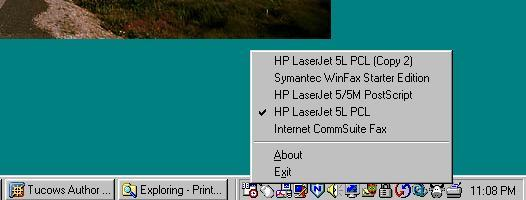

|  | |
Printers is a an applet that runs in the Microsoft Windows system tray. It allows a user to quickly set and determine the system's default printer.
[Top]At present there is very little documentation. The applet can be located in any directory. Simply start the applet when windows starts and click on the icon in the system tray.
[Top]Download from Sourceforge
[Top]For Printers user issues there is a developers mailing list. Postings should be limited to discussing issues related to this Printers application or System tray applications. Archives of the lists are available, follow the links for more details. Please do not ask me Printers related questions by email, I will not reply directly. Use the mailing lists instead
[Top]